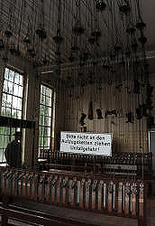
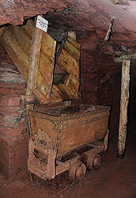

Grube Fortuna
Useful Information


| Location: |
Grube Fortuna 1, 35606 Solms-Oberbiel.
North of Solms-Oberbiel near Wetzlar. B227 between Werrdorf and Aßlar, turn off to Berghaus, left at the entrance to the village, 1.5 km to the mine. (50.575002, 8.424038) |
| Open: |
APR to OCT Wed-Sun, Hol 10-17. Online booking mandatory. [2022] |
| Fee: |
Adults EUR 12, Children (6-16) EUR 7, Trainees EUR 11, Students EUR 11, Disabled EUR 11. Groups (10+): Adults EUR 11, Children (6-16) EUR 6. Expertentour: Adults EUR 29. Eventtour: Adults EUR 39. [2022] |
| Classification: |
 Iron Mine Iron Mine
|
| Light: |
 Incandescent Electric Light System Incandescent Electric Light System
|
| Dimension: | T=13 °C. |
| Guided tours: |
D=60 min, MinAge=6. Expertentour: D=3 h, MinAge=14, Max=12. Eventtour: D=4 h, MinAge=14, Max=10. |
| Photography: | allowed |
| Accessibility: | no |
| Bibliography: |
Hansjoachim Lippert (1952):
Das Roteisenstein-Grenzlager von der Wende Mittel-Oberdevon in der Dill-Mulde
Beobachtungen und Gedanken zur Entstehung von Erz und Nebengestein. In: Zeitschrift der Deutschen Geologischen Gesellschaft. Bd. 104, 1952, ISSN 0012-0189, S. 260–276. 
Hansjoachim Lippert (1953): Aus dem Roteisenstein-Bergbau an Lahn und Dill In: Zeitschrift der Deutschen Gesellschaft für Geowissenschaften. Bd. 105, 1953, S. 20–24.
Lapis Red. (1984): Lapis Aktuell: Besucherbergwerk Grube Fortuna bei Wetzlar Lapis, Jg.9, Nr.7, S.5.
Karsten Porezag (1987): Bergbaustadt Wetzlar Wetzlardruck GmbH, Wetzlar 1987, ISBN 3-926617-00-4
Tim Schönwetter (2018): Die Grube Fortuna – Denkmal des hessischen Eisenerzbergbaus In: Zeitschrift Industriekultur 1.2018, S. 16–19.
|
| Address: |
Geowelt Fortuna e. V., Besucherbergwerk, Grube Fortuna, Grube Fortuna 1, 35606 Solms-Oberbiel, Telefon: +49-6443-8246-0.
E-mail: |
| As far as we know this information was accurate when it was published (see years in brackets), but may have changed since then. Please check rates and details directly with the companies in question if you need more recent info. |
|
History
| 1847 | Ore deposits of the Fortuna mine mentioned for the first time in the Bergamtsakten (records of the mining authority). |
| 1849 | Mine field awarded to Prince Ferdinand zu Solms-Braunfels. |
| 1878 | 3.6 km long cableway to the Georgshütte blast furnace plant in Burgsolms opened. |
| 1900 | First shaft sunk. |
| 1906 | Fürst sells the Fortuna mine and all other mines, including the Ferdinand mine, to the Friedrich Krupp company in Essen. |
| 1907 | Machine shaft II sunk 150 m. |
| 1908 | Second cableway opened from the tipping hall to Albshausen station on the Lahntal railway. |
| 1908-1915 | Neuer Tiefer Stollen (New Long Tunnel) excavated. |
| 1953 | Harz Lahn Erzbergbau AG takes over the mine operations. |
| 1962 | First shutdown of the mine. |
| 1963 | Operations are resumed due to problems caused by the switch to foreign ores. |
| 1981 | Sophienhütte in Wetzlar is the last blast furnace plant in Hesse to shut down. |
| 1983 | mine closed. |
| 1987 | opened to the public. |
| 1993 | Feld- und Grubenbahnmuseum Fortuna (FGF) opened to the public. |
Geology
In this iron mine the ores Roteisenstein (hematite) and Brauneisenstein (limonite) were mined. These are very iron rich ores with an iron content between 40 and 65%. The main deposit of this ores in Germany lies in the Lahn-Dill-area and the neighboring Siegerland. The deposits are Devonian sediments. The iron ores in the area cause the opening of numerous mines, which are all closed today.
The ore is almost pure iron ore consisting of haematite, limonite and very little pyrite. The surrounding rock is dolomite and limestone, so that calcite crystals were also formed. There is also a little baryte and quartz, but both are economically insignificant.
Description


The Grube Fortuna (Fortuna Mine) was once owned by the famous German steel company Krupp, and was the last working iron mine of Hessen when it was closed in 1983. Limonite and haematite were mined on various levels. An attempt to stop mining as early as 1962 and use cheaper ore from the world market failed because the conversion led to problems. After only one year, mining was resumed and continued for two more decades.
The tour starts with a movie, then the 45 minutes underground tour starts. The mine is entered through the Tiefer Stollen, a rather young and spacious tunnel. The name Tiefer Stollen is pretty common, and while it literally may be translated deep tunnel, what actually is meant is long tunnel. Generally very long tunnels, connecting different mine areas, were named such. Here is a hoist which bring the visitors down to the 150 m level. A mine train ride of 450 m leads to the part of the mine where the underground tour takes place. The tour show the mining technology of the mid 20th century, especially working machinery powered by high pressure air and electricity.
The ore was mined with explosives, then the rubble was removed with electric dredges, with rail mounted or rail less mine trains with shovel. An underground mine train transported the ore to the hoist, which lifted it up to the Tiefer Stollen. The ore went to the ore treatment plant Kipphalle at Berghausen-Oberbiel where it was processed. Then a cable car transported the ore to the railroad station Albshausen and the Lahntalbahn (Lahn Valley Railroad) transported the ore to various furnaces. A part was transported with another cable car to the Georgshütte (George's Furnace) in Burgsolms.
The normal guided tour of the mine is unusual in that it includes both a ride in the mine hoist and a ride on the mine train. This is probably unique in Germany; the others offer at most one of these. Nevertheless, the tour is very easy, you don't even have to climb stairs, even though the tour is not officially stated as being suitable for the disabled. The minimum age of 6 is probably due to these two rides. In addition to these regular tours, special tours are offered. Here the minimum age is 14, there are no lights, the tour lasts several hours, and you have to climb stairs, wade through dirt and possibly even climb a ladder at times. The miner refers to all this as fahren (driving). The three-hour tour is also called Expertentour (expert tour), although they don't explain whether you have to be an expert or become an expert through the tour. The four-hour tour is called Eventtour (event tour), which probably means that you have to climb the 150 metres in altitude from the bottom of the mine via ladders to the surface. Event is probably a synonym for strenuous. Both special tours are definitely worthwhile; you can see the magnetite deposit and old, hall-like mine chambers. All tours have to be booked online, probably due to Corona. As a result, there are no open hours given, you look in the online calendar for a tour that is not fully booked and buy a ticket.
The show mine was created by the Förderverein Besucherbergwerk Fortuna e.V. (Friends of the Show Mine Fortuna), a non-profit organization founded after the closure of the mine. After the show mine was completed, it was transferred to the county which operates the sight. The club started to create a second museum on the same premises, the Feld- und Grubenbahnmuseum Fortuna (narrow gauge railway and mine railway museum). It is continually extended and contained in 2007 more than 50 locomotives and 100 cars. Most of the trains are in working condition and are demonstrated on about 10 days every year. On these days they are powered up and visitors can take a ride on the 2.5 kilometers long rails which include a forest and ascent part. Even without the train rides, the museum is an ideal completion of a mine visit.
|

the working clothes are hoisted to the ceiling with chains. |

the elevator going down to the 150 m level. |

train cars were filled from the level above using gravity. |
- See also
 Search Google for "Grube Fortuna"
Search Google for "Grube Fortuna" Google Earth Placemark
Google Earth Placemark Grube Fortuna (Solms) - Wikipedia (visited: 14-OCT-2022)
Grube Fortuna (Solms) - Wikipedia (visited: 14-OCT-2022) Grube Fortuna, official website (visited: 14-OCT-2022)
Grube Fortuna, official website (visited: 14-OCT-2022)- Feld- und Grubenbahnmuseum Fortuna (visited: 14-OCT-2022)
- Grube Fortuna - Mineralienatlas (visited: 14-OCT-2022)
- Fortuna Mine, Oberbiel, Solms - mindat.org (visited: 14-OCT-2022)
- Solms-Oberbiel, Besucherbergwerk Grube Fortuna (visited: 14-OCT-2022)
 Index
Index Topics
Topics Hierarchical
Hierarchical Countries
Countries Maps
Maps Search
Search{kind=link}
{kind=link}